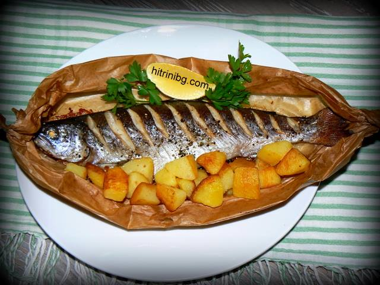

Пъстърва

Тук е място да кажа няколко думи за месото на пъстървата. То е много богато на протеини, съдържа малко количество рибна мазнина, а хайверът на пъстървата е богат на витамин А. Протеините в месото и достигат до 20%, а мазнините едва достигат 6%.
Отрежете си по-голям лист хартия за печене и навийте двете страни, а краищата усучете така, че да се получи като легло.
Поставете приготвената риба в него (показано е на една от снимките). Подредете рибите с хартията в тава и сложете във фурната. Фурната трябва да е предварително загрята на 180 градуса. В тавата не се налива никаква течност. Печете около 20-30
Съставки
- пъстърва (за всяка порция по 1 риба с грамаж около 250-300 гр. изчистена)
- лимон
- сол
- Черен пипер
Начин на приготвяне
- В случай, че рибата не е изчистена, започнете с тази операция. Изчистете вътрешностите и люспите. Измийте я добре под течаща вода. Подсушете добре рибата. Сложете върху дъска и направете диагонални разрези.
- Посолете отвън и отвътре със сол и поръсете с малко прясно смлян черен пипер. Добре е поне 1 час да я оставите да се овкуси и осоли. Намазнете я след това отвън с избраната от вас мазнина и сложете в коремната кухина по няколко тънки резена лимон.
- Отрежете си по-голям лист хартия за печене и навийте двете страни, а краищата усучете така, че да се получи като легло.
Поставете приготвената риба в него (показано е на една от снимките). Подредете рибите с хартията в тава и сложете във фурната. Фурната трябва да е предварително загрята на 180 градуса. В тавата не се налива никаква течност. Печете около 20-30.